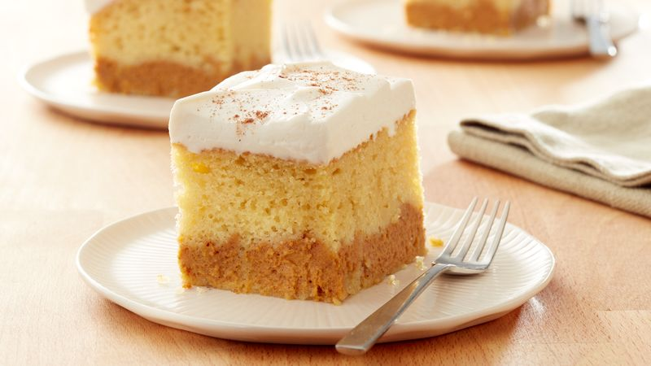
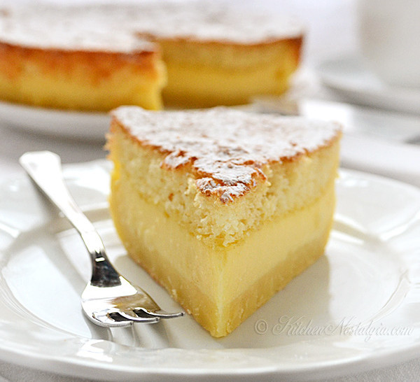
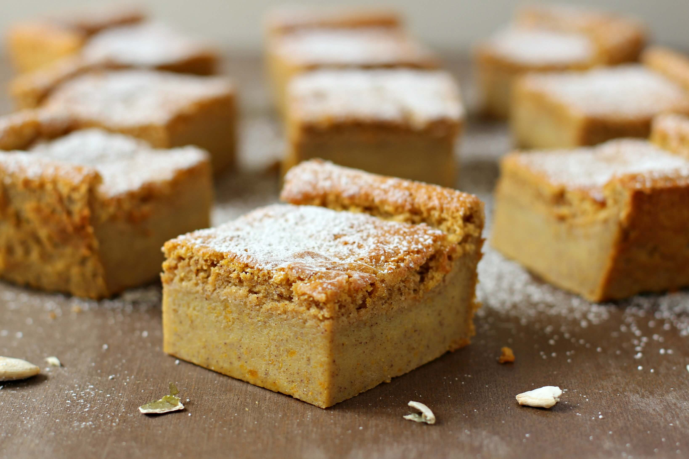

Bolo de Baunilha
Bolo de Baunilha Top de Linha, que você mesmo(a) pode fazer!
É muito simples de fazer, apenas siga os passos abaixo.
Ingredientes:
- 3 ovos
- 4 colheres (sopa) de margarina/manteiga
- 2 xícaras (chá) de açúcar
- 3 xícaras (chá) de farinha de trigo
- 1 xícaras (chá) de leite
- 1 colher (sopa) de fermento químico
- 1 colher (sopa) rasa de baunilha
Modo de Fazer:
- Numa vasilha adicione os ovos, a margarina/manteiga e o açúcar e bata bem, até ficar um creme homogêneo.
- Acrescente a farinha de trigo aos poucos, batendo bem, intercalando com o leite.
- Acrescente a baunilha e mexa bem.
- Por último, acrescente o fermento e mexa suavemente
- Leve ao forno preaquecido, numa forma untada e enfarinhada (a forma que costumo utilizar é uma de buraco no meio, de 26 cm), por 40 minutos a 180/200ºC.
Your Photos
- 
- 
- 